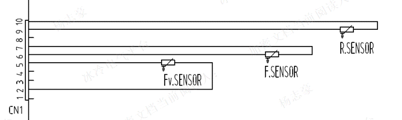

Normáltéri NTC hiba. (R sensor)
Fagyasztótéri NTC hiba (F sensor)
Elpárologtató NTC hiba (Fv sensor)
Helyiség - környezeti- NTC hiba
Ellenőrizd a főpanel és kezelő panel közötti vezeték folytonosságát. Ha a vezeték jó, cserélj kezelőpanelt!Kommunikációs hiba a kijelző és főpanel között.
Ellenőrizd a kezelő és főpanel közötti vezetéket. Ha jó, cserélj kijelző panelt, ha továbbra sem jó, akkor főpanelt!Kommunikációs hiba a nyomógombok és főpanel között
Ellenőrizd a nyomógombok működését és a kijelző-főpanel közötti vezetékezéstFagytéri ventilátor hiba.
Ellenőrizd a ventilátor csatlakozóját és a ventilátor és főpanel közötti vezetéket. Ha jó, cserélj ventilátor motort, ha továbbra sem jó, akkor főpanelt!Légzsilip hiba.
Ellenőrizd a légzsilip csatlakozóját és a légzsilip és főpanel közötti vezetéket. Ha jó, cserélj légzsilipet, ha továbbra sem jó, akkor főpanelt!NTC hiba.
Ellenőrizd az NTC-k hőmérsékletnek megfelelő értékét. Ha nem jó, cseréld ki a megfelelő érzékelőt!Fagyasztótér működési ellenörzése freezer.html
Ellenőrizd az ajtógumit. Ha kell, ragaszd be és szilózd ki a palást fém és műanyag részei közötti rést.Ha szükséges, az ajtó zsanér segítségével állítsd be az ajtó megfelelő záródását!